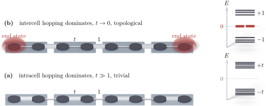
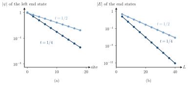

Advanced Quantum Materials 2027 · All lectures · Lecture notes
Session 3. Topological Band Structure Theory
3.9b The SSH chain in the opposite limit and the zero modes
What happens to the SSH chain when the strong bonds are the ones between the unit cells? We will now see that the bulk is the same as before, but each end keeps one site that is not bound, and this gives two states at zero energy. These two states stay when we turn on a small hopping \(t\), and their energy goes to zero exponentially with the length of the chain.
In the first limit the strong bonds are the intracell ones. Now let us take the opposite limit, \(t \to 0\), in which the strong bonds are the intercell ones and the dimer pattern is shifted by one site. We leave the first site uncoupled, so that it is a dangling site, we couple \((1,2)\), \((3,4)\), …, and we also leave the last site dangling. In the bulk this looks the same as the previous chain, since it has the same alternating dimer pattern shifted by one site. The two ends are qualitatively different, because each end now has a site that is not coupled at all. When we diagonalize this chain, we obtain the same bonding and antibonding pairs at \(\pm 1\) in the bulk, and also two states pinned exactly at zero energy, one localized at each end. Figure 3.3 shows the two chains side by side together with their spectra.

This is the minimal example of a topological phase. The fully dimerized chain of the first case is the trivial phase, which is gapped everywhere, including at the ends. The shifted chain of the second case is the topological phase, which is gapped in the bulk but has gapless modes at zero energy at the edges.
This construction looks very fine-tuned, and it is, since real chains have hopping between every pair of neighboring sites. The important part is what survives when we remove the fine-tuning. If we turn on a small coupling \(t\) between the sites at the two ends that were decoupled, the zero modes are not removed, as long as \(t\) stays below the bulk hopping strength. Intuitively, for \(t \ll 1\) we weakly couple an isolated zero-energy level to a gapped bulk, and a weak coupling cannot push a level all the way across a finite gap. In a more exact way, this is the deformation argument of Section 3.7. The Hamiltonians at different small \(t\) are topologically equivalent, since they are connected without closing the bulk gap. So the invariant that protects the zero mode at \(t=0\) also protects it when the coupling is finite.
We can see how the end state survives in a calculation. In Schematic 3.10 the end state sits on one sublattice and decays by a factor \(t\) in every unit cell. As a result the energy of the two end states, which comes from their overlap, decreases as \(t^{L/2}\) with the length \(L\) of the chain.
An open SSH chain of \(L\) sites with \(t<1\), which starts and ends with the weak bond \(t\), has two states inside the gap, with the energies
\[E \simeq \pm\, t^{L/2}\,\big(1-t^2\big).\]
They are the sum and the difference of two end states, one at each end, and this energy is what splits them. The end state of the left end has the amplitude \((-t)^j\) on the first site of the cell \(j\) and no weight on the second site. When the chain is long, so that \(t^{L/2}\) is small, the two energies are very close to zero, while the levels of the bulk stay at least \(1-t\) away from zero.
The steps From the end state to its energy
We count the unit cells with \(j=0,\dots,N-1\), where \(N=L/2\), and we write \(a_j\) and \(b_j\) for the amplitudes on the first and on the second site of the cell \(j\). The intracell hopping is \(t\) and the intercell hopping is \(1\). The simplest case is \(t=0\). The first site of the chain is then not coupled to anything, so the state with \(a_0=1\) and all the other amplitudes equal to zero has \(E=0\), and the same holds for the last site.
For a finite \(t\) we look for a state with \(E=0\) that sits only on the first sites, with \(b_j=0\). The Schrödinger equation on a first site is \(E\,a_j=t\,b_j+b_{j-1}\), which is then \(0=0\). On the second site of the cell \(j\) it is
\[t\,a_j + a_{j+1} = E\,b_j = 0, \qquad\text{so that}\qquad a_j = (-t)^j\,a_0 .\]
This is the decay by a factor \(t\) in every unit cell. The sum \(\sum_j|a_j|^2=1\) gives \(a_0^2=(1-t^2)/(1-t^{2N})\), which is \(1-t^2\) for a long chain, so the state can be normalized for \(t<1\). We call this state \(|\mathrm{left}\rangle\). Its mirror image \(|\mathrm{right}\rangle\) sits on the second sites and decays from the right end, with \(b_{N-1-j}=(-t)^j\,a_0\).
In a finite chain one equation is left. The last site of the chain has no cell to its right, so its equation has only the term \(t\,a_{N-1}\), which is not zero. The state \(|\mathrm{left}\rangle\) is then not an eigenstate, and
\[H\,|\mathrm{left}\rangle = t\,(-t)^{N-1}\,a_0\;|\text{last site}\rangle .\]
The state \(|\mathrm{right}\rangle\) has the amplitude \(a_0\) on the last site, so the Hamiltonian couples the two end states with
\[\langle \mathrm{right}|H|\mathrm{left}\rangle = t\,(-t)^{N-1}\,a_0^2 \simeq -(-t)^{N}\,\big(1-t^2\big).\]
The two states sit on different sublattices, so they are orthogonal, and \(\langle \mathrm{left}|H|\mathrm{left}\rangle=0\) because the hopping only joins a first site with a second site. In the basis of the two end states the Hamiltonian is then a \(2\times2\) matrix with zeros on the diagonal and this coupling off the diagonal, and its eigenvalues are
\[E = \pm\,t^{N}\,\big(1-t^2\big) = \pm\,t^{L/2}\,\big(1-t^2\big).\]
The eigenstates are the sum and the difference of the two end states. For \(t=1/4\) and \(L=8\) this formula gives \(0.00366\), and the diagonalization of the chain gives \(0.00366\) too. The formula uses \(a_0^2\simeq1-t^2\) and leaves out the states of the bulk, and both are good only when \(t^{L}\) is small. For \(t=0.5\) and \(L=8\) it is off by \(1\%\). For \(t=0.8\) and \(L=8\) it gives \(0.15\), the exact \(a_0^2\) gives \(0.18\), and the diagonalization gives \(0.20\).

The end states of this chain have been measured in graphene nanoribbons. A ribbon whose width alternates along its length has electronic states that are described by the SSH Hamiltonian. Scanning tunneling spectroscopy, which gives the local density of states at the position of the tip, is then done at the end of the ribbon. A localized end state is found in the ribbons of the topological class, and it is absent in the ribbons of the trivial class. The measurement is in this article.
A chain has eight sites, numbered from \(0\) to \(7\). Only the pairs \((1,2)\), \((3,4)\) and \((5,6)\) are coupled, with hopping \(1\). How many levels are at zero energy?
Show the answers
- A. ✗ False
This is false. The sites \(3\) and \(4\) form a dimer with the levels \(\pm 1\). Also, the levels of this chain come in pairs \(\pm E\), so the number of zero levels of eight states must be even and cannot be one.
- B. ✗ False
This is false. The sites \(0\) and \(7\) are not bound. The Hamiltonian applied to the state on site \(0\) gives zero, so this site is a level at zero energy.
- C. ✓ True
This is true. The sites \(0\) and \(7\) are not coupled to anything, so each one is an isolated level at zero energy. The three dimers give three levels at \(+1\) and three at \(-1\).
An open SSH chain has the intracell hopping \(t=1/4\) and the intercell hopping \(1\). With eight sites the two levels inside the gap are at \(E=\pm 0.004\). Where are they with sixteen sites?
Show the answers
- A. ✗ False
This is false. The exact numbers for \(t=1/4\) are \(\pm0.059\) for four sites, \(\pm0.0037\) for eight sites and \(\pm0.00023\) for twelve sites. The energy changes with the length.
- B. ✗ False
This is false. Going from four to eight sites the energy drops from \(0.059\) to \(0.0037\), a factor \(16\) and not two. Each added unit cell of two sites gives a factor \(t=1/4\), and the four added sites give \(t^2=1/16\).
- C. ✓ True
This is true. Each end state decays by a factor \(t\) every two sites. The overlap between the two ends then scales as \(t^{L/2}\) for \(L\) sites, which is \(4^{-8}\approx 1.5\times 10^{-5}\) for sixteen sites.
The end state at the left end of an SSH chain has zero energy. Its amplitude \(a_j\) on the first site of the cell \(j\) obeys
\[t\,a_j + a_{j+1} = 0,\]
where \(t\) is the intracell hopping and the intercell hopping is \(1\). Which amplitude is the end state for \(t=1/4\)?
Show the answers
- A. ✗ False
This is false. With \(a_0=1\) and \(a_1=1/4\) the equation gives \(\tfrac14\cdot 1+\tfrac14=\tfrac12\), which is not zero. The sign has to alternate from cell to cell.
- B. ✓ True
This is true. Each cell multiplies the amplitude by \(-t=-1/4\), so the weight \(|a_j|^2\) falls by a factor \(16\) per cell and the state sits at the left end.
- C. ✗ False
This is false. This solves the equation for \(t=4\) and not for \(t=1/4\). It also grows away from the end, with \(|a_{10}|\approx10^6\), so it cannot be normalized at the left end. For \(t>1\) there is no end state.
Three open chains have 16 sites each. Two of them have the alternating hoppings \(1\) and \(1/2\). The third has all its hoppings equal to \(1\). Each picture shows the levels \(E_n\) of one chain. Which chain has a weak bond at both ends?
Show the answers
- A. ✗ False
This is false. This chain has the two hoppings, but it starts and ends with a strong bond, so every site is in a strong dimer. Its levels closest to zero are at \(\pm0.55\), and the gap is empty.
- B. ✓ True
This is true. The two levels in the middle of the gap, at \(E=\pm0.003\), come from the two end states. Each end site is attached by a weak bond and gives one end state, and the two mix into a sum and a difference. The other levels start at \(\pm0.59\).
- C. ✗ False
This is false. This is the chain with all the hoppings equal. Its levels go from \(-1.97\) to \(1.97\) with no gap. The closest to zero are at \(\pm0.18\), and they move to zero as the chain gets longer.
An open chain has an odd number of sites, \(L=2N+1\), with the bonds \(t,1,t,1,\dots,t,1\) along the chain. Show that it has one state at exactly zero energy for every value of \(t\). Find at which end this state sits for \(t<1\) and for \(t>1\).
Solution
We write \(a_j\), with \(j=0,\dots,N\), for the amplitudes on the even sites, and \(b_j\), with \(j=0,\dots,N-1\), for the amplitudes on the odd sites. The hopping only joins an even site with an odd site. We look for a state with \(E=0\) and \(b_j=0\). The equations on the even sites are then satisfied, and the equation on the odd site \(j\) is
\[t\,a_j + a_{j+1} = 0, \qquad j=0,\dots,N-1 .\]
These are \(N\) equations for \(N+1\) amplitudes, so there is always one solution, which is \(a_j=(-t)^j\,a_0\). No equation is left, as it was for the chain with an even number of sites, so the energy is zero exactly, and not only up to \(t^{L/2}\).
For \(t<1\) the weight \(|a_j|^2=t^{2j}|a_0|^2\) is largest at \(j=0\). This is the left end, the one that is attached by the weak bond \(t\). For \(t>1\) the weight is largest at \(j=N\), the right end, which is now attached by the weaker of the two bonds, the one of strength \(1\). At \(t=1\) the weight is the same on all the even sites. So the state goes from one end to the other through the bulk, at the value of \(t\) where the gap of the bulk closes.
This is useful in a calculation, since a chain with an odd number of sites has one end state with no splitting, also when the chain is short. In a measurement of the local density of states with STM, such a chain has a peak at zero energy at one end only. This end tells us which of the two bonds is the weaker one.
- In Section 3.9c the Zak phase of the bulk tells us when these end states exist.
- In Section 5.16 the free sites at the ends become the free Majoranas at the ends of the Kitaev chain, and Section 5.17 compares periodic and open chains.
- In Section 9.8 a vacancy is a boundary of zero size, and it binds an in-gap mode in the Haldane model and in a chiral p-wave superconductor.